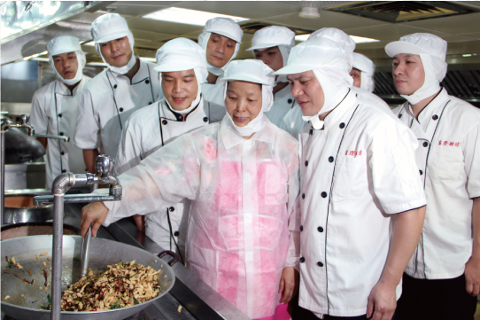

2017.04.01
億長御坊連續七年奪得台北市「天下第一攤」榮譽

億長御坊的緣起歷程，是創辦人朱姐追尋父母親記憶與食物味道的一趟旅程；旅途中的風景、人們、味道，豐富了這段旅行；而當中的酸甜苦辣人生百態點滴入味，讓朱姐的料理不只有味道，更是人情味。「這是多麼令人驚慌與遺憾的一件事！」這個故事的起源在有一天，朱姐驚覺自己對於母親的印象竟開始模糊，於是走進廚房，嘗試拼湊起對母親味道與父親家鄉味的記憶。在憑著記憶與圍繞在婆婆媽媽的身邊打轉，一點一滴地進步了廚藝，練就了眼光，開始了朱姐的創業之路。過程中間如同試煉般也經過許多的挫折與打擊，然而朱姐的好手藝與重情義重新聯繫起一個一個的口碑與支持力量，讓億長御坊與朱姐再度站起來，充滿感恩地成為熟食領域的「天下第一攤」。這是朱姐與大家「心」的記憶，也是朱姐的入味人生。走過幾十個年頭，現在由第二代小老闆接棒，傳承的不只是這個心意與記憶，也是夢想的延續：億長御坊會是熟食界的精品品牌，也是一張屬於大「家」的餐桌。在這裡可以找到一個屬於自己的鄉愁，或是熟悉的味道，就像朱姐當初尋到對父母的記憶一樣。這裡的菜色或許大江南北，但是一道菜一個故事，一個口味一個記憶，在這裡一定能找到屬於您的故事，就像回到家裡。
回上頁